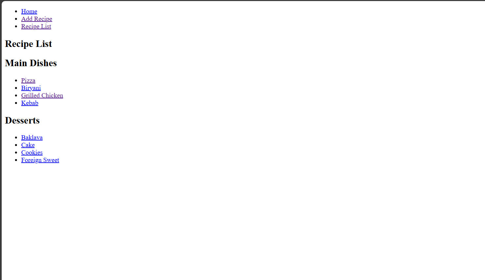
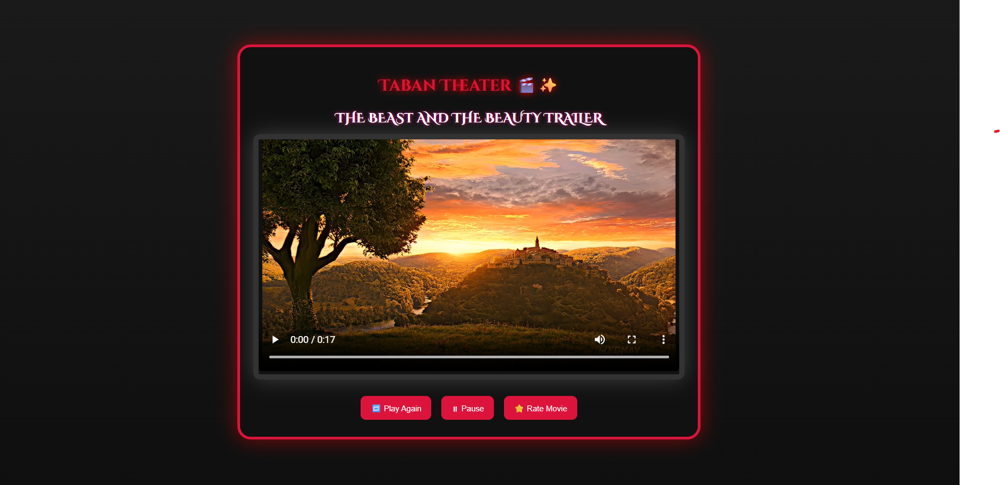
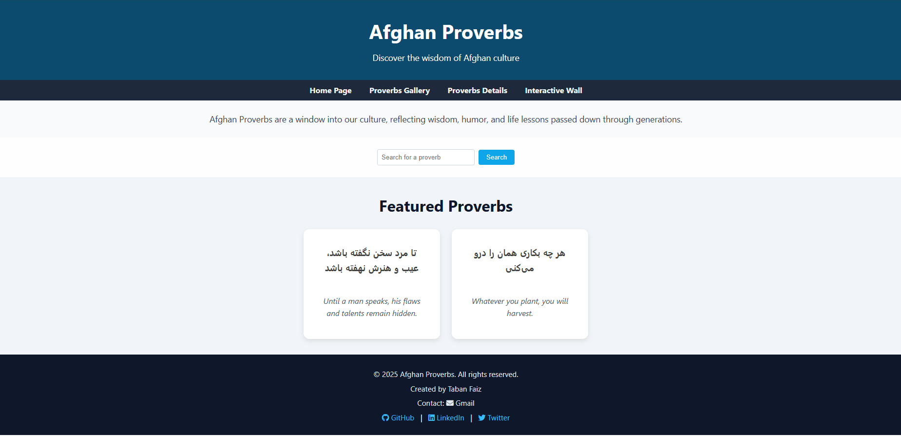

My Projects
Explore my completed projects and upcoming ideas where creativity meets functionality.
Here you'll find examples of my work showcasing responsive designs, clean code, and user-centered approaches.
Completed Projects
These are the projects I have built so far using the skills I've learned:
1. Recipe Book Website

My first HTML-only project. It’s a simple digital recipe book with multiple pages, a recipe form,
and a featured recipe section. It helped me learn the basics of structuring content and using forms,
images, and links.
View Project
2. Movie Theater Website

A creative single-page site styled like a cinema screen.
It includes a video trailer, custom fonts, and fun design using CSS. This project helped me
practice video embedding and layout styling.
View Project
3. Afghan Proverbs Website

A responsive website showcasing Afghan proverbs. It features a proverb gallery, details section,
and user submission form. I used HTML and CSS with animations and warm cultural design.
View Project
Dream Website Projects
These are future projects I aspire to build as I grow on my journey as a web designer:
1. Digital Book Reading Website
I plan to build a website where users can read or download digital books easily.
The collection will focus on psychology, personal growth, and novels. It will be a cozy place for book lovers
to explore meaningful content and expand their knowledge.
2. Language Learning Platform
I want to create an engaging language learning site that covers all four skills: reading, writing,
listening, and speaking. The platform will be user-friendly and fun, making language learning accessible and enjoyable for everyone.
3. Personal Blog & Journal Website
This website will be a space where I can share my writings and thoughts with others.
Since I love writing a lot, I want people to read and connect with my texts.
It will be a personal journal open to anyone interested.